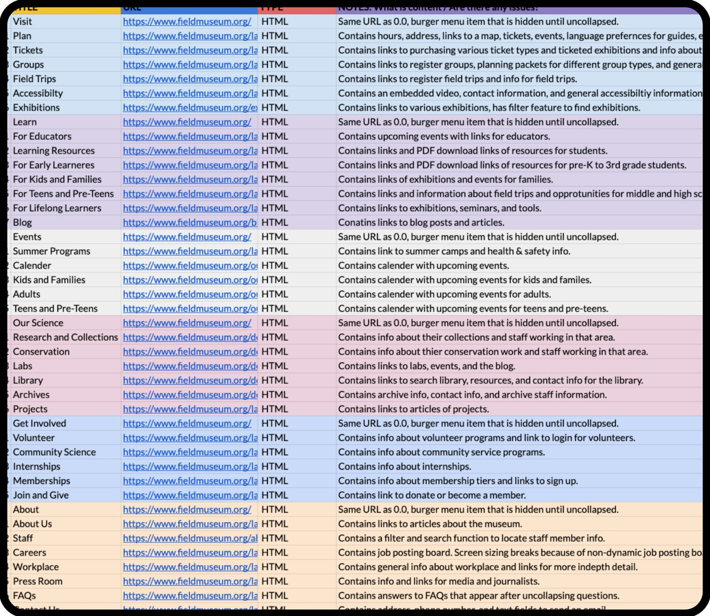
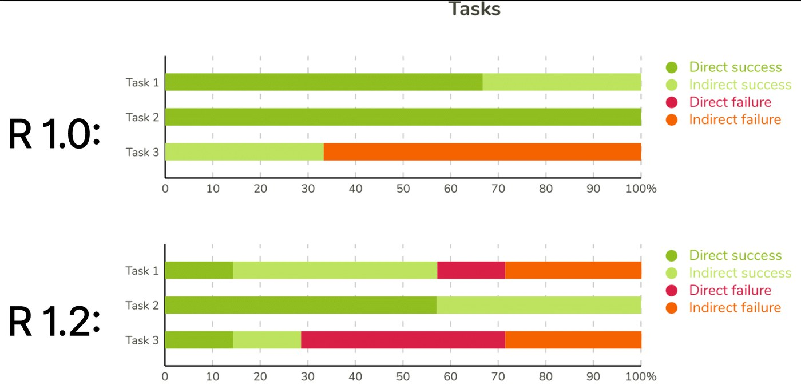
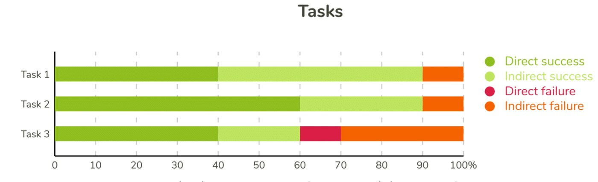
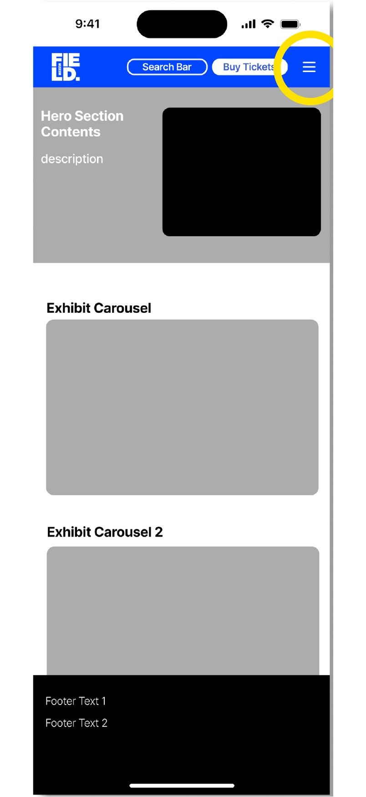
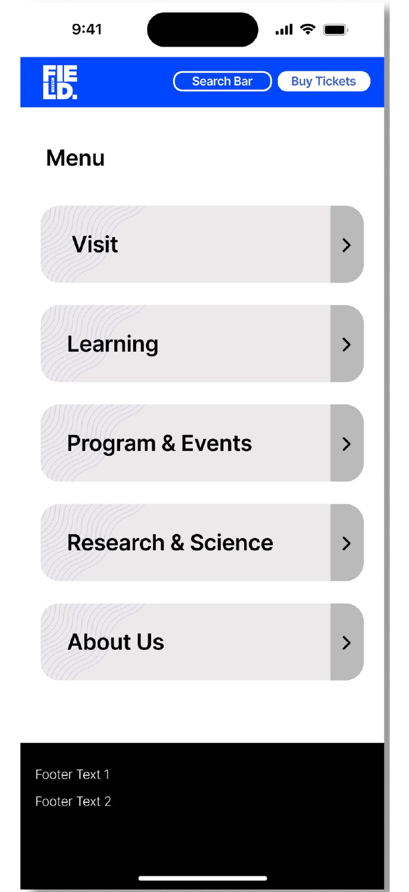
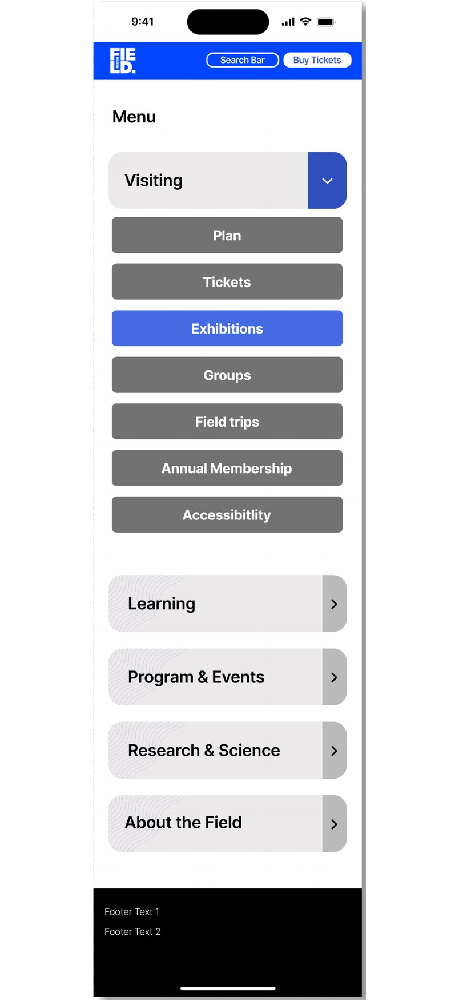
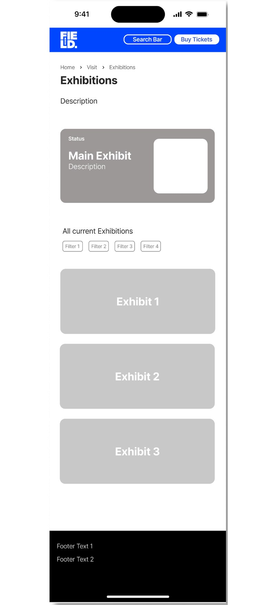
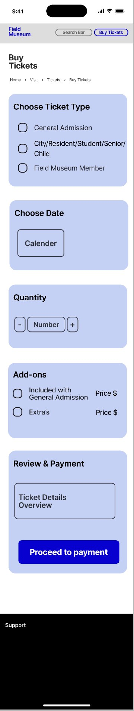
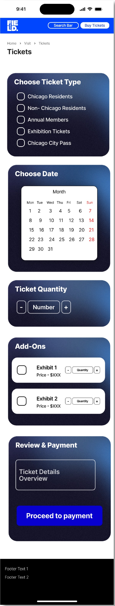

Field Museum | Information Architecture Redesign
Reorganizing the Field Museum’s mobile menu around how visitors actually look for things.

Project Overview
As a three-person group project for HCI 457 (Information Architecture), we evaluated and redesigned the navigation of the Field Museum’s mobile website. The museum draws over a million visitors a year, and its site is where they buy tickets, discover exhibits and learn about the museum’s science. The top of the menu worked, but deeper levels were disorganized, inconsistently labeled and full of redundant links.
Over two rounds of card sorting and three rounds of tree testing, we rebuilt the menu from six mixed categories into five topic-based ones. Success finding research resources rose from 30% to 60% between tree test rounds, and finding exhibit information rose from 70% to 90%. We finished with a new sitemap and wireframes for the two tasks the site handled worst.
The Challenge
Visitors couldn’t predict where things lived once they went past the first level of the menu.
The hamburger menu mixed task-based labels (“Buy Tickets,” “Become a Member”) with topic-based ones (“Visit,” “Our Science”), so the same thing often appeared in two places. Labels like “Learn” and “Our Science” were vague, some submenus ran five levels deep, and many links led off to external sites.
Goals
Simplify the mobile navigation so it follows information architecture principles and matches visitors’ mental models. We focused on the key tasks people come to the site for:
- Finding information about current exhibitions
- Finding ticket and parking information, and buying tickets in advance
- Finding information about museum events
My Design Process
- Explore
- Research
- Ideate
- Test Iterate
- Implement Iterate
Methods
- Content Inventory
- Heuristic Analysis
- Card Sorting
- Tree Testing Iterate
- Sitemap & Wireframes
Research
Content Inventory
We started by cataloging every link in the mobile menu to see the scope of what needed to change. The menu split into six areas: Visit, Learn, Events, Our Science, Get Involved and About. Three problems stood out: mixed action- and topic-based labels, vague names, and redundant content, with nearly every page repeating links or adding its own navigation bar.
Because the site was so deep, we scoped the redesign to level 3 of the navigation (level 4 where needed) and left out external pages and duplicates.

Heuristic Analysis
Each of us scored two key tasks against six heuristics, then we averaged our ratings. Buying a ticket scored lowest. The site didn’t explain the different ticket types or show which step of checkout you were on, and the only way back was the browser’s back button, which erased your selections. Exhibition info was clearer, but cards looked too much like buttons and nothing showed which exhibits cost extra.
| Task | Average score | Biggest issue |
|---|---|---|
| Purchasing a ticket | 3.0 | Didn’t support users’ mental model; unclear ticket types and no sense of progress |
| Finding current exhibitions | 3.7 | Cards hard to tell from buttons; no cue for exhibits that cost extra |
| Both tasks | 3.35 | Strong on visual consistency and recognition |
Personas
The museum serves families, teens and adults, so we wrote two personas that cover distinct ends of that audience and used them to write our test tasks (personas by Brendon Keo).
Lidia, 37, parent
A social worker from Oak Park with three kids. She has a few hours to spare and wants to see every current exhibit her family might enjoy, even if some cost extra.
Kyle, 19, student
An anthropology student at UIC writing a paper on ancient Egyptian culture. He cares less about the exhibit and more about the research the museum has published.
Who we tested with
Chicago locals aged 18 to 30 who don’t know the exhibits well, tourists planning a visit, and college students interested in history.
Card Sorting
We ran closed card sorts to see whether visitors understood our simplified categories and renamed cards. I ran the pilot; Brendon ran the two full rounds.
Rounds
- Pilot: 8 categories, 34 cards, based on the site’s existing menu.
- Round 1: 11 participants, 7 categories, 35 cards.
- Round 2: 12 participants, 7 categories, 35 cards.
What We Found
- Pilot: Task-based categories made sorting harder. The participant wanted “Buy Tickets” inside Visit, and couldn’t tell what “Our Science” or “Learn” meant. We switched to topic-based labels, kept Tickets and Membership as utility links too, and added an “I don’t know” option.
- Round 1: Our new name “Behind the Scenes” got confused with “About Us,” and “Special Events” didn’t match expectations. We changed back to “Our Science,” renamed events to “Programs & Events,” and made cards more descriptive (“Programs for Kids and Families”).
- Round 2: Confusion dropped for Our Science, Programs & Events and nearly every learning card. Seven cards stayed ambiguous, including Press Room, Library, Accessibility and Exhibitions.
Research → Design: We placed the seven ambiguous cards where they fit best, then checked those choices directly in tree testing instead of guessing.
Tree Testing: Pilot and Round 1
Scenarios
I ran three tree tests in total with 23 participants: a pilot with 3 and two rounds of 10. Each task was a short scenario built from our personas.
- Task 1: A friend recommended a new exhibit. Where would you go to find information about exhibits?
- Task 2: You’re worried about parking during your visit. Where would you find parking information?
- Task 3: You’re a college student researching ancient Egyptian culture. Where would you go to find the museum’s resources?
Metrics Tracked
- Task success rate
- Direct vs. indirect success (whether people backtracked first)
- First category clicked and the paths people took
Success Criteria
Participants end on the correct menu item, ideally directly. A low rate, or a high rate reached only after backtracking, flagged a category to rename or move.
Results
The pilot exposed problems with both the tree and the tasks. Splitting exhibitions into “included” and “ticketed” confused people, and parking had no clear home, so we made one Exhibitions card and a distinct Parking card.
In Round 1, parking hit 100% and exhibits reached 70%, but only 30% of participants found the ancient Egypt research. Many of them looked under “Learning” first instead of “Our Science.”

What we changed: We moved Exhibitions up in Visit, renamed “Plan Visit” to “Plan” and “Research & Collections” to “Research,” and added Research inside Learning as well. We also removed “Get Involved” and redistributed its cards. Parking was solved, so we replaced that task with one about resources for young learners.
Tree Testing: Round 2
Scenarios
Ten participants completed the revised tree. We kept the exhibit task, reworded the research task to ask about “how ancient Egyptians lived,” and added a new task: a parent looking for learning resources for their 5-year-old.
Metrics Tracked
- Task success rate, compared with Round 1
- Direct vs. indirect success
- Post-test comments on what was hard to find
Success Criteria
Higher success on the tasks that struggled in Round 1, especially research, without hurting the tasks that already worked.
Results
| Task | Pilot (3) | Round 1 (10) | Round 2 (10) |
|---|---|---|---|
| Find information on a current exhibit | 66.7% | 70% | 90% |
| Find where to park | 33.3% | 100% | Retired |
| Find detailed resources for research | 33.3% | 30% | 60% |
| Find resources for a specific age group | — | — | 90% |
All four direct successes on the research task went through Learning → Research, which confirmed that placing Research in both categories was right. Three of the four failures still chose a reasonable way to learn about ancient Egypt, such as Exhibitions, and comments showed the task wording was still unclear.

The Final Sitemap
After the second tree test, we sorted cards and categories by what both studies showed and used the names that tested best. Where the data stayed ambiguous, we used our best judgment. The final menu has five topic-based categories: Visiting, Learning, Programs & Events, Research & Science, and About the Field. We removed action-based labels, the “Get Involved” category and redundant content, and listed Research under both Learning and Research & Science because participants expected it in both (sitemap by Brendon Keo).
Select the sitemap to open it full size.
Wireframes
Arjun turned the sitemap into mobile wireframes for the two tasks that scored worst. Menu items became cards that turn blue when selected, so visitors get immediate feedback. The Exhibitions page highlights the featured exhibit first, then lists all current exhibitions with independent tag filters that can be combined.




Before and After
On the live site, buying tickets meant moving through several disconnected pages and relying on the browser’s back button, which often lost your choices. The redesign puts every ticket step on one scrollable page: ticket type, date, quantity, add-ons, then review and payment.


Closing / Future Work
The biggest lesson was that labels carry the architecture. Most of our gains came from renaming and regrouping, not adding anything new, and every rename was checked with real participants before it stuck.
- Mixed navigation confuses people. Combining task-based and topic-based labels left visitors unsure what a menu item contained.
- Depth goes unused. Navigation past level 4 was rarely used; that content might be better as a separate site.
- One screen beats many. People preferred information on a single screen over sub-sections spread across pages, which shaped the ticket and exhibition designs.
What I’d do differently. Word the tree test prompts more clearly from the start, since the research task’s wording muddied two rounds of results. And address the mixed navigation labels right after the content inventory instead of waiting for card sorting to surface them.
Next steps. Give the Research & Science category more focus, run first-click testing and test an interactive prototype, and recruit audiences beyond our two personas.
The Problem
Visitors couldn’t predict where things lived once they went past the first level of the menu.
The Field Museum’s mobile menu mixed task-based labels (“Buy Tickets”) with topic-based ones (“Visit”), so the same thing often appeared in two places. Labels like “Learn” and “Our Science” were vague, and some submenus ran five levels deep.
The Solution
Over two rounds of card sorting and three rounds of tree testing, our team of three rebuilt the menu from six mixed categories into five topic-based ones: Visiting, Learning, Programs & Events, Research & Science, and About the Field.
- Every rename was tested with participants before it stuck.
- Research appears in two places, under Learning and Research & Science, because participants expected it in both.
- Wireframes for the worst tasks turned menu items into cards with clear selection feedback, and put every ticket step on one scrollable page.
The Outcome
Finding exhibit information also rose from 70% to 90%. Most of the gains came from renaming and regrouping, not adding anything new. Next steps are first-click testing, an interactive prototype and testing with audiences beyond our two personas.